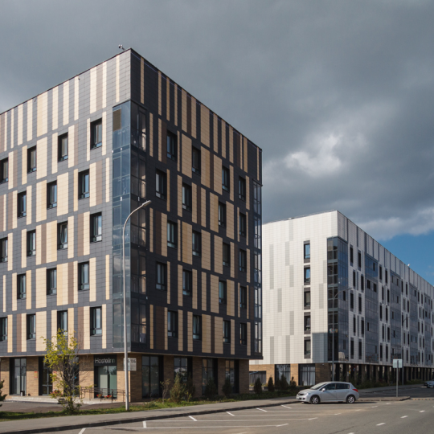

Население
405 чел.
Казань - Иннополис
1 ч. 20 мин.
Казань - Иннополис
42 км.
Вернуться
История города
Экскурсии по городу
Иннополис находится в Верхнеуслонском районе Республики Татарстан в месте слияния двух рек — Волги и Свияги. Это первый российский город для ИТ-специалистов.
Концепция «Умный город» помогает Иннополису организовать инфраструктуру, бизнес, образование, городские услуги и быт жителей Иннополиса так, чтобы жить в ИТ-городе было комфортно. Премьер-министр Российской Федерации Дмитрий Медведев вместе с Президентом Республики Татарстан Рустамом Миннихановым и министром связи и массовых коммуникаций РФ Николаем Никифоровым заложили капсулу с посланием будущим жителям на стартовой площадке строительства города. Через три года, 9 июня 2015 года, был дан официальный старт жизни нового города.
Разработкой мастер-плана Иннополиса руководил Лиу Тай Кер, генеральный планировщик департамента по перепланировке Сингапура -- эталона для большинства современных городов мира.
Премьер-министр России Дмитрий Медведев, министр связи и массовых коммуникаций РФ Николай Никифоров, врио президента Татарстана Рустам Минниханов нажали символическую кнопку запуска нового города.
В первый день рождения города Иннополис прошли конференции «Цифровая индустрия промышленной России» и РИФ.Иннополис, которые собрали более 5 тысяч гостей.
В Иннополисе ежедневно находятся более 3800 человек. Зарегистрировано 367 компаний, из них 126 - резиденты и партнеры ОЭЗ «Иннополис». Сдано в аренду более 88 тысяч квадратных метров недвижимости. Запущена вся базовая инфраструктура: 22 жилых дома, детский сад, школа, ИТ-лицей, медицинский и спортивный центры, работают отделения почты и банков, 3 супермаркета, пиццерия, кафе, бар, автомойка, аптеки, книжный и цветочный магазины, хобби-центр и другие сервисные компании.
Rafkakakakakakakakakak находится в Верхнеуслонском районе Республики Татарстан в месте слияния двух рек — Волги и Свияги. Это первый российский город для ИТ-специалистов.
Концепция «Умный город» помогает Иннополису организовать инфраструктуру, бизнес, образование, городские услуги и быт жителей Иннополиса так, чтобы жить в ИТ-городе было комфортно. Премьер-министр Российской Федерации Дмитрий Медведев вместе с Президентом Республики Татарстан Рустамом Миннихановым и министром связи и массовых коммуникаций РФ Николаем Никифоровым заложили капсулу с посланием будущим жителям на стартовой площадке строительства города. Через три года, 9 июня 2015 года, был дан официальный старт жизни нового города.
Разработкой мастер-плана Иннополиса руководил Лиу Тай Кер, генеральный планировщик департамента по перепланировке Сингапура -- эталона для большинства современных городов мира.
Премьер-министр России Дмитрий Медведев, министр связи и массовых коммуникаций РФ Николай Никифоров, врио президента Татарстана Рустам Минниханов нажали символическую кнопку запуска нового города.
В первый день рождения города Иннополис прошли конференции «Цифровая индустрия промышленной России» и РИФ.Иннополис, которые собрали более 5 тысяч гостей.
В Иннополисе ежедневно находятся более 3800 человек. Зарегистрировано 367 компаний, из них 126 - резиденты и партнеры ОЭЗ «Иннополис». Сдано в аренду более 88 тысяч квадратных метров недвижимости. Запущена вся базовая инфраструктура: 22 жилых дома, детский сад, школа, ИТ-лицей, медицинский и спортивный центры, работают отделения почты и банков, 3 супермаркета, пиццерия, кафе, бар, автомойка, аптеки, книжный и цветочный магазины, хобби-центр и другие сервисные компании.
